Design
Flipper Path
Front Flippers
Sea turtles move their front flippers in a three dimensional figure 8 pattern to produce thrust. To maximize efficiency, we mimicked the sea turtle flipper path found in this paper.
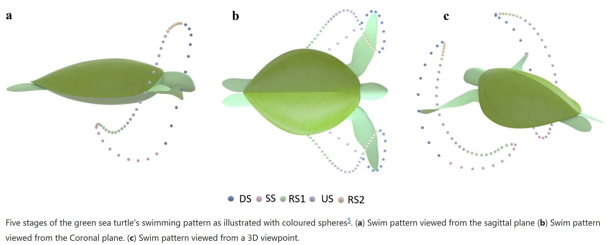
We began with several options for achieving the 3D flipper path, mostly combinations of various planar mechanisms to achieve the 3D path. We prototyped two options. The first option has a single motor drive both front flippers using a complex linkage mechanism with a 4 bar linkage, and two ball joints:
The other main option was one that uses three motors and four crank rockers on linear rails to drive both front flippers, which was more robust than the first option.
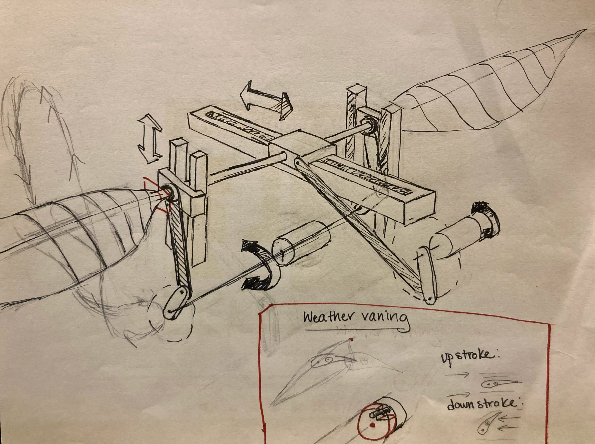
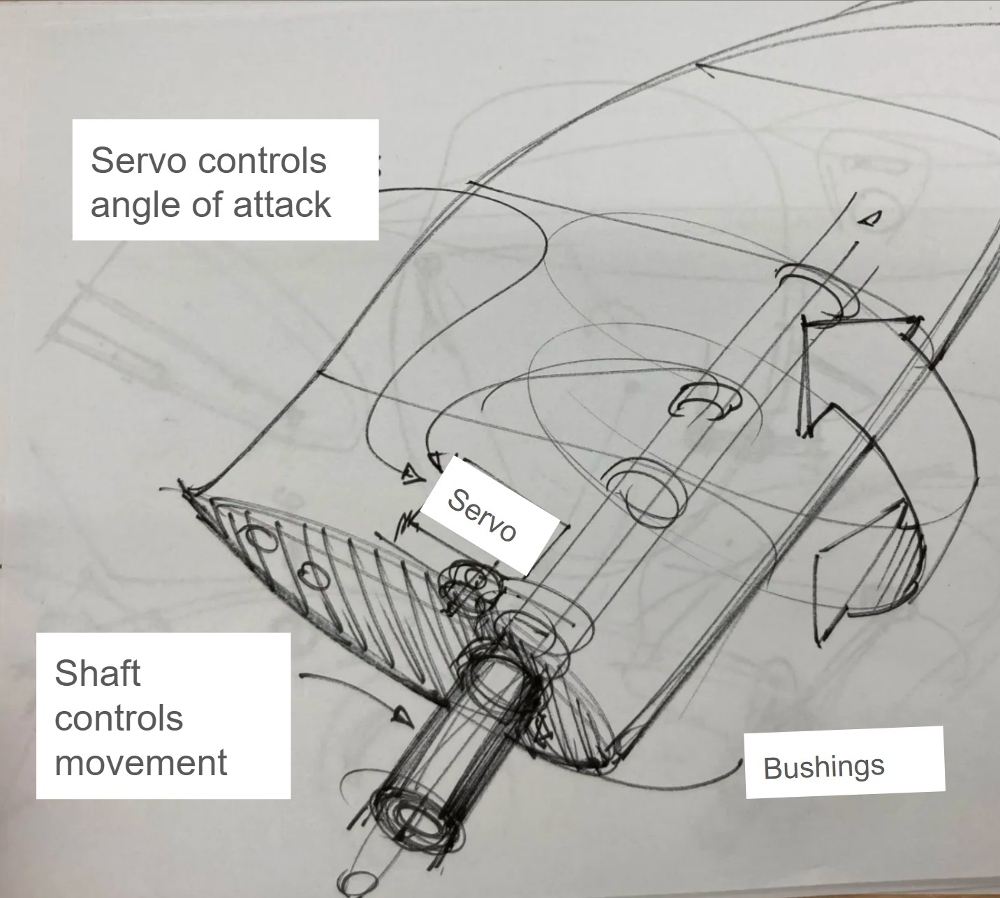
We learned through these prototypes that we wanted a way to more easily iterate our flipper path, and thus pivoted to a purely motor controlled flipper actuation design, using servo motors as a serial manipulator. The reduced mechanical components with this option also reduce the room for potential error. In initial iterations of this design, we used three servo motors for each front flipper for a total of six motors.
With this assembly of servos, we were able to deconstruct the 3D points and servo angles of the paper used in their robotic turtle and apply it to our system. We then tried to follow a similar process by inputting the 3D path into Solidworks and mapping our flipper and servo assembly to determine the angles needed to match the exact path, however we found this to be challenging. We tried finding a mathematical fit for the 3D path using inverse kinematics to determine the joint angles for each servo for the flipper end tip to match the curve, but in the end, we applied a simple elliptical flipper path. This was done by oscillating the servos defined with sine and cosine waves, then scaling the waves to achieve our desired major and minor axes of the ellipse.
Rear Flippers
While sea turtles use lift-like mechanics in their front flippers, acting like wings while their hind flippers were meant to act like rudders. As this will allow for a simplified design, steering, and ground movement stability, the robot also used its hind flippers as rudders. In initial iterations of the design, the back flippers were also controlled with three servo motors each, for a total of six motors.
To reduce down our motors, we simplified the front flipper actuation to a two motor serial manipulator and only used a single motor for the rear flipper. This decreased our servo motor count from 24 motors to 6 motors, reducing weight and load on the grounded motor, increasing efficiency, and reducing electrical losses.
Flipper Geometry
We performed calculations to determine the generated thrust from the paper’s flipper path given our rough flipper dimensions. Our flipper lengths are designed to be anatomically close to real sea turtle proportions given the body needed to house our internal components while maintaining positive buoyancy. For the thrust calculations, we assume a rectangular flipper with a width of 7.62 cm and a length of 30 cm. The roll, pitch, and yaw coordinates were taken from Geest et al. 2022 [1]. The pitch, yaw, and roll angles are plotted below.

Calculations of the flippers followed the method described in the paper linked above. The equation below was used to calculate the total thrust generated by the flipper. The thrust calculation code models the thrust generated by a flipper by first calculating its trajectory in three-dimensional space, then deriving velocity and acceleration from that path.
$$ \begin{aligned} F_T = m a + \frac{\rho (SA) c_d v^2}{2} \end{aligned} $$Here, \( c_d \) is taken as a function of twist angle (pitch), \( \rho \) is the fluid density, \( A \) is the surface area, and \( v \) is the velocity magnitude. The Euler angles were used to transform a coordinate \( (0, 0, P) \), representing the tip of a flipper with our flipper length. Numerical derivatives of the transformed coordinates were then taken to determine the velocity and acceleration of the flipper tip. These values were used together with the pitch-dependent drag coefficient to calculate the total thrust force.
The thrust calculation code interpolates the roll, pitch, and yaw angles from the paper onto a common time base. The position \( (X(t), Y(t), Z(t)) \) is then calculated based on the flipper length and the Euler transformations of the local coordinates through the roll, pitch, and yaw angles using rotation matrices. The thrust is computed using Newton’s second law together with the drag force, and the torque generated by this thrust is calculated by multiplying the force by the lever arm length (half of the rod’s length). This provides insight into the mechanical efficiency and power of the flipper stroke.
The thrust calculated for this flipper path is as shown:

The integrated thrust from the above plot is 3.05 N. The load on the shaft was determined by multiplying the thrust force with the center of mass point. It was also observed that the drag force does not significantly affect the load to first order.
The top-down profile of both the front flippers was designed to mimic that of sea turtles, while the rear flippers were designed to behave more like boat rudders. The side profiles were formed from NACA airfoils: NACA 4412 for the front flippers and NACA 0012 for the rear flippers [3]. The flippers were modeled in SolidWorks and 3D printed from ABS using a Fortus 380MC.
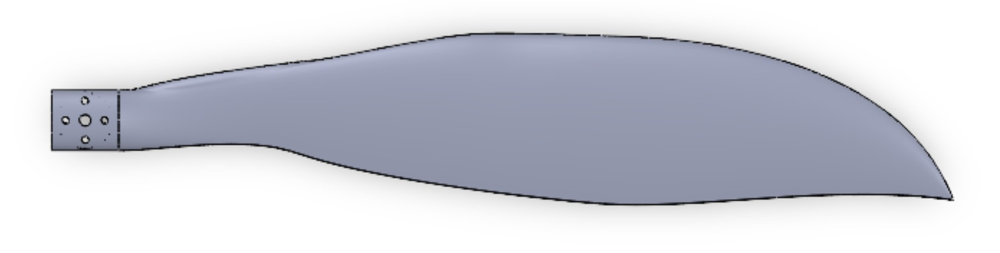
Front Flipper CAD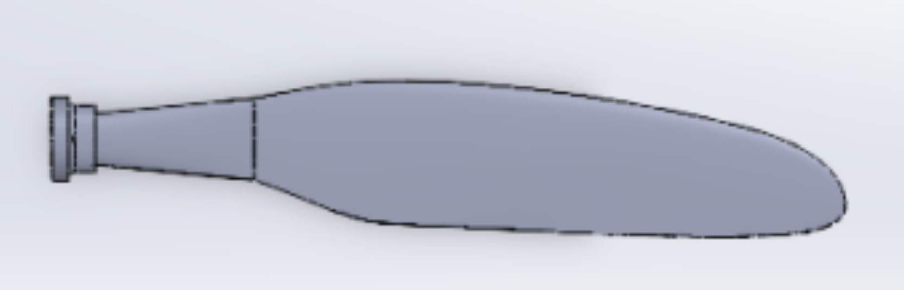
Rear Flipper CADBallast
The turtle's ability to move up and down in the water was inspired by submarine systems. Foam floats were attached to the turtle to increase the baseline uoyancy. Ballast tanks then act as the primary, controllable weight mechanism to change buoyancy. The low infill 3d print shell creates natural limber holes. As water enters the bottom of the turtle via limber holes, it pushes air out of the top vents. This increases the weight of the submarine (negative buoyancy), causing it to sink. The limber holes ensure that air is not trapped under the deck or within the outer structure, which could cause unwanted positive buoyancy.
For the ballast system, we chose to use the 12V DC geared motor because the force needed to drive the syringes requires a lot of torque. Tolerances and fits were especially important and carefully selected for the ballast system.
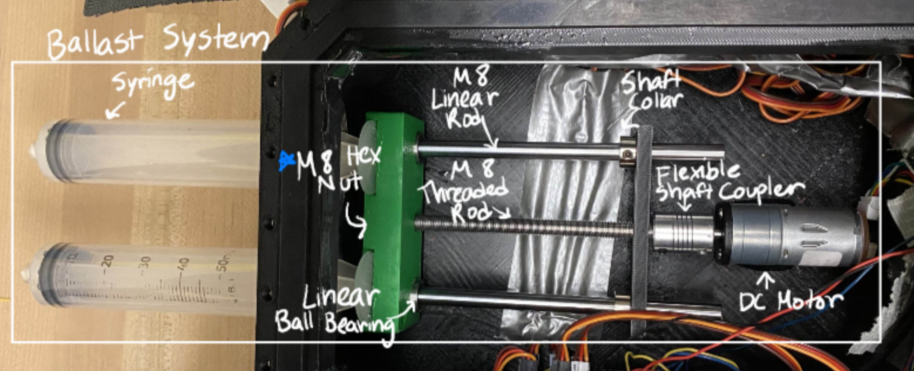
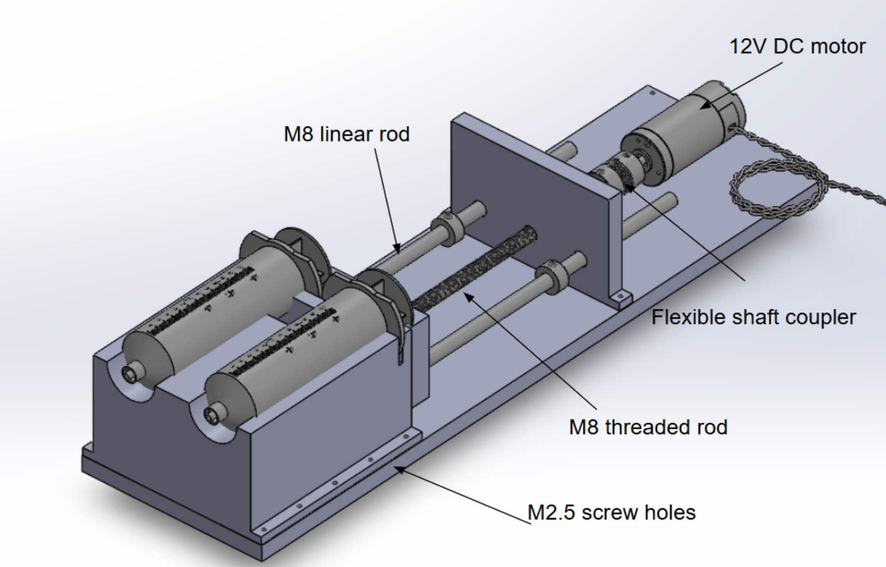
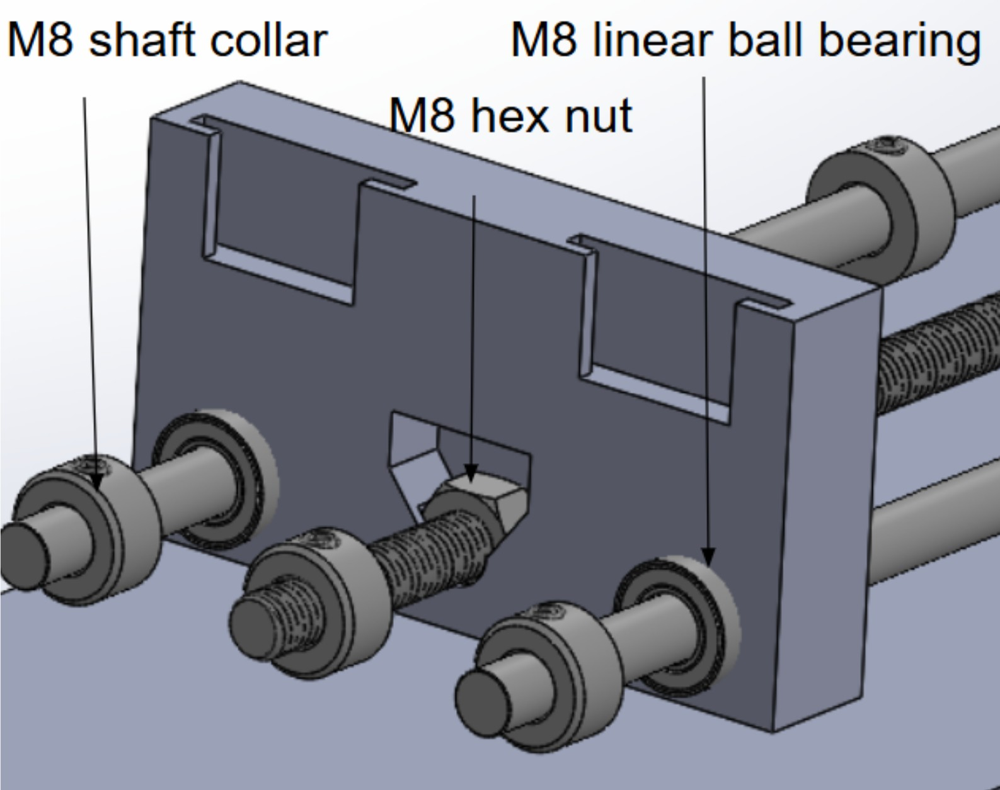
Housing Design
The housing was designed to be rectangular, which would facilitate the mounting of motors and electronics to it. Since we were using PLA as our material for the housing, we chose ¼” thick walls that were sufficiently durable and prevented water from leaking through the pores of the material. The overall size of the housing matched the printing size of our 3D printer - roughly 10”x10” - to contain the ballast system and all of the wiring. A 3D printed turtle shell with round surfaces would surround the housing to improve aerodynamics and assist with buoyancy. In hindsight, the housing could have been made smaller if we had shortened the wires and placed the breadboards above the ballast. The top of the housing was designed to have a groove for the gasket and bolt holes evenly spaced for even application of pressure.
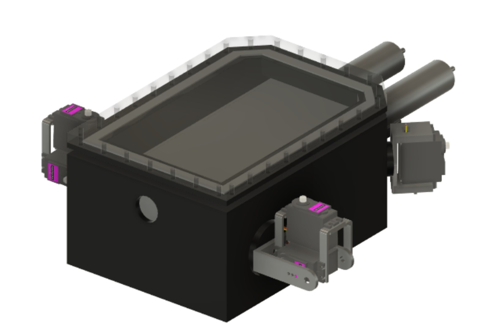
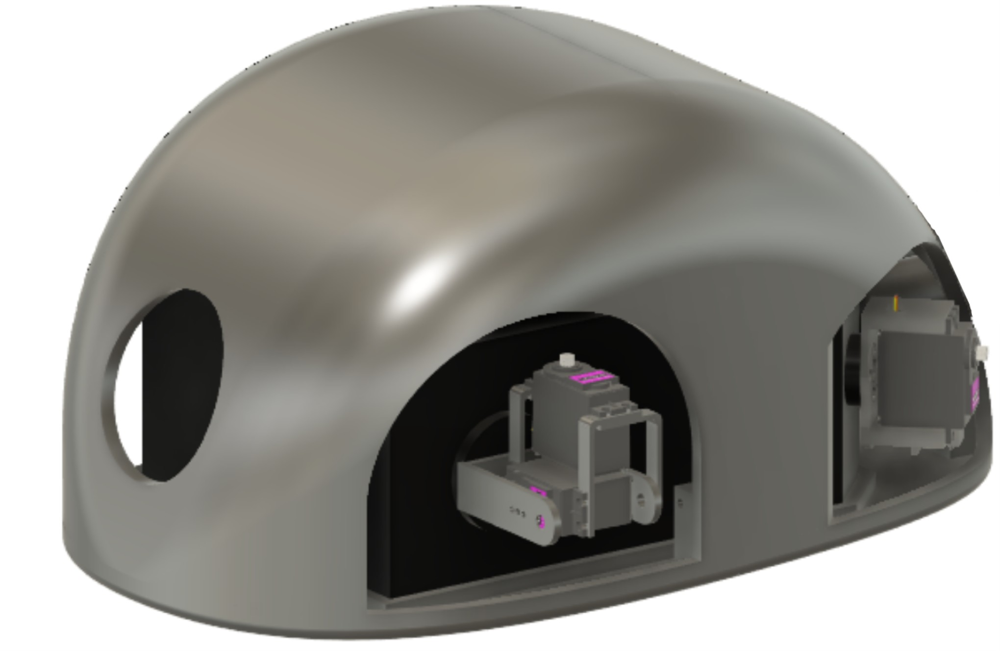
Waterproofing
All of the wires, breadboards, and microcontrollers were placed within our 3D printed housing. To allow for easy access to the electronics within the housing, we designed a custom neoprene gasket that was cut on a laser cutter. The gasket would be compressed by a lid via nuts and bolts. The syringes for the ballast system were mounted through holes on the housing side. We sealed the gap between the syringes and holes with epoxy.
The flipper motors are attached to the housing, and would be covered with rubber boots. The servo motors would have also been covered in grease or silicone oil to further protect the components from water, as it is a moving component that can not sit entirely within our housing.
>All other components do not need to be waterproofed. Because of this, our outer shell can be printed with a low infill density. The gaps in the outer shell would act as limber holes to provide water to the ballast system, helping control the turtle buoyancy.
The shells and bodies of sea turtles are streamlined to reduce drag in the water. Given more time, we would have iterated the shell design to optimize aerodynamics to further maximize robot efficiency.
Electronics and Software
To control the TurtleBot, we correlated the front and back flipper movements to a joystick. The front flippers move forward in a predetermined path regardless of the direction. When the joystick is in a forward position, the back flippers lay flat in a neutral angle. When the joystick is pointed right, the right back flipper tilts backward, and when the joystick is pointed left, the left back flipper tilts backward. The LEDs serve as a visual cue of this behavior: both lights turn on when moving forward, otherwise the red or yellow LED, located on the left or right side of the joystick respectively, will light up when turning in that direction.
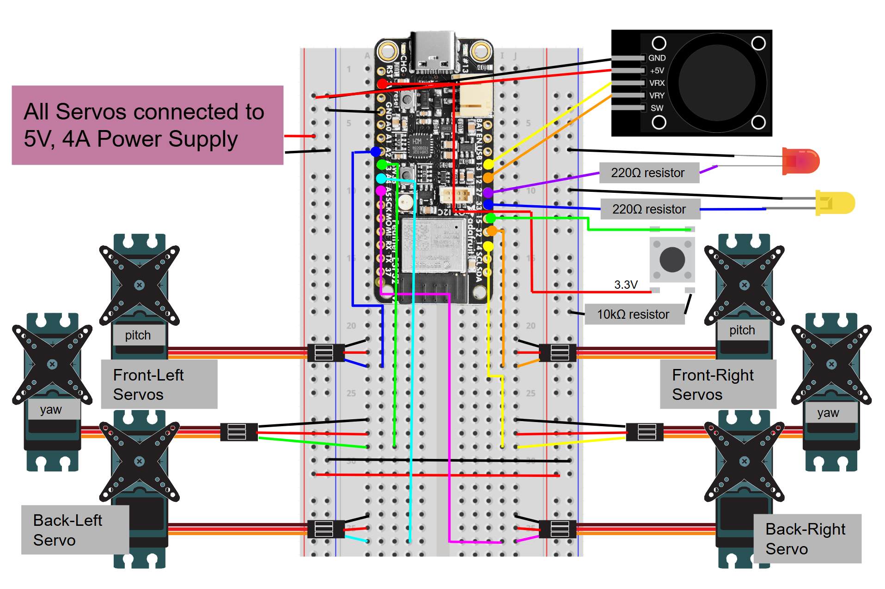
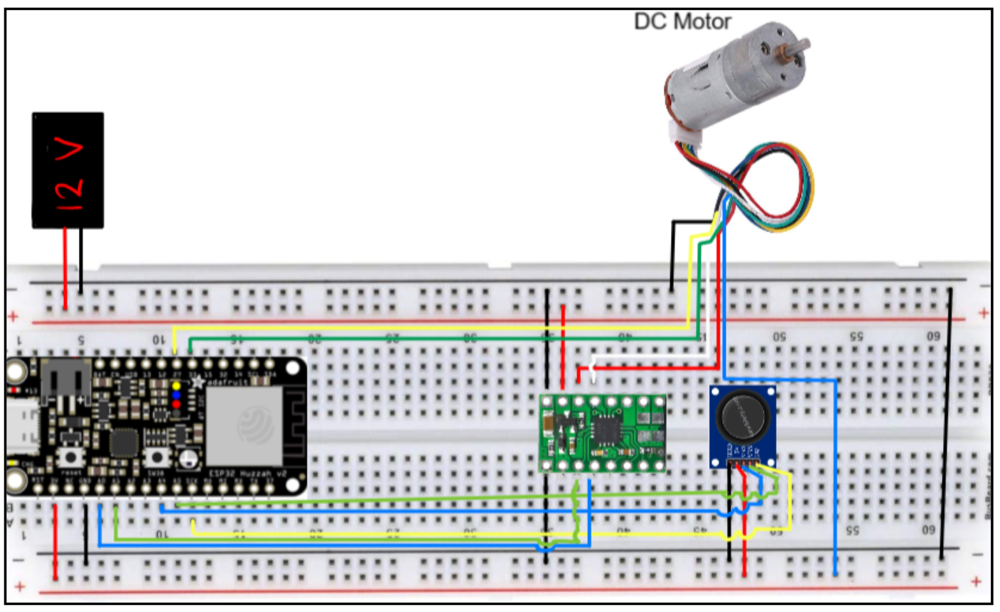
The ballast DC motor required 12V while the flipper servo motors required 5V. We used a 12V, 10A power supply with a buck converter stepped down to 5V to power our entire robot.
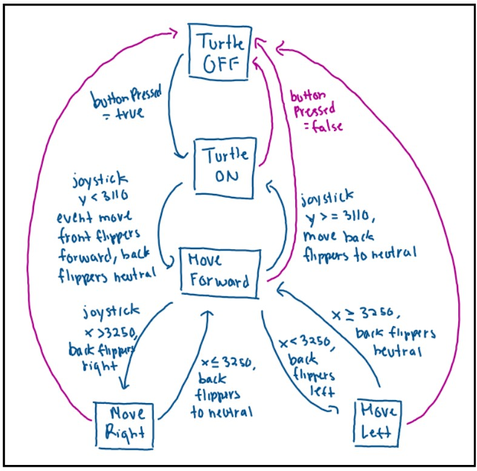
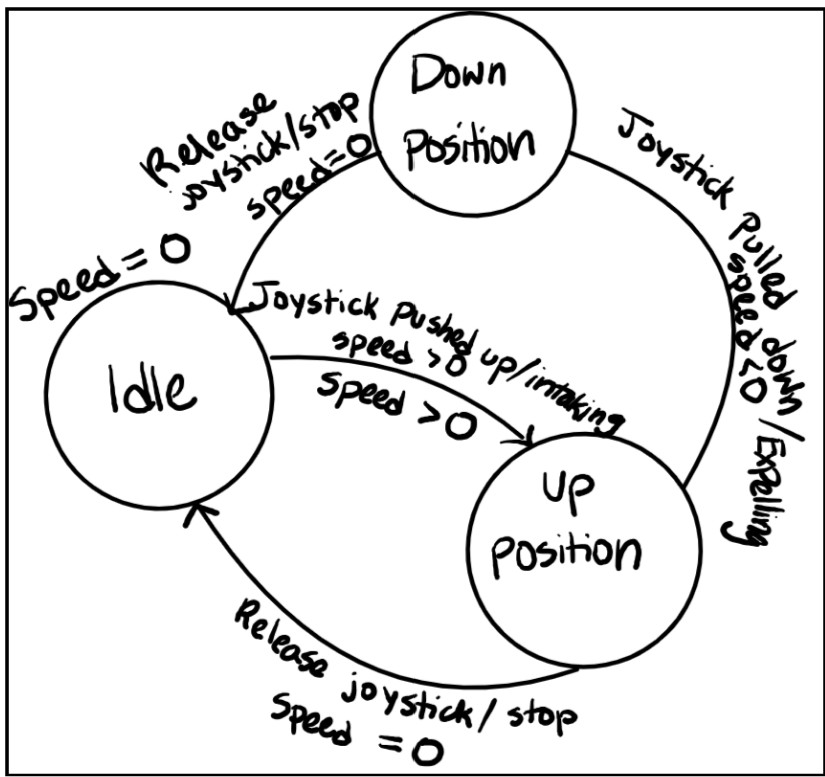